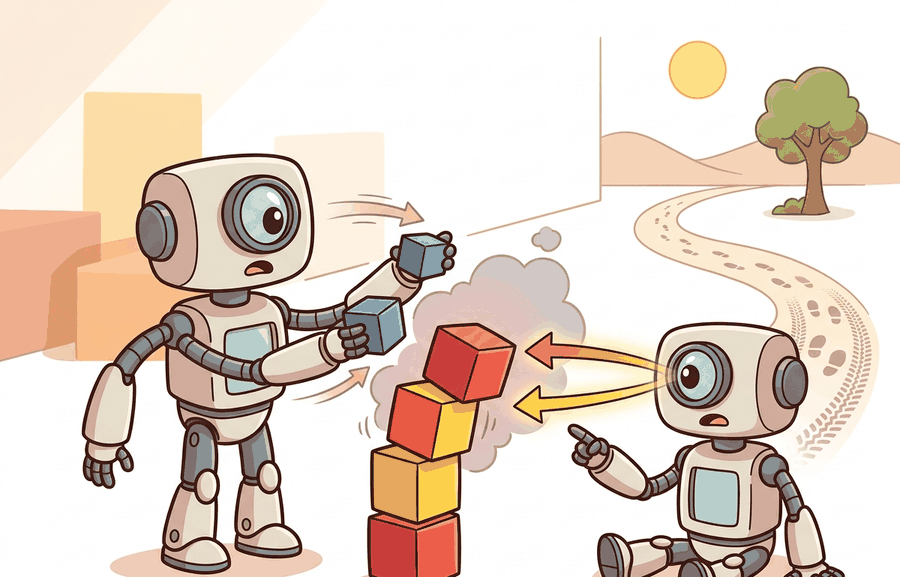

A Careful Control Loop

The reality gap is the measured difference between what a policy appears to do in simulation and what the same policy does on matched real trials. Treat it as an experiment artifact, not as a complaint about realism.
For The reality gap as a measurable quantity, connect the agent-environment boundary, dynamics assumptions, and transfer checks through the simulator artifact actually used in the experiment.
Define The Gap Before Measuring It
A reality-gap measurement starts with a matched panel: the same task description, initial condition family, observation contract, action limits, controller frequency, success metric, and failure labels in simulation and hardware. Without that matching, the gap is not a quantity. It is a story assembled from different experiments.
The practical question is not whether simulation is "close enough" in general. The question is whether the simulated evidence predicts the real decision that matters: which policy to deploy, which failure mode to fix, which parameter to randomize, or which claim to publish.
The reality gap is meaningful only when the simulated and real numbers are co-computed on the same panel. A simulator score from one setup and a hardware score from another setup cannot support a transfer claim.
A Paired Measurement, Not A Vibe
Let $M_{\text{sim}}(c)$ be the metric for case $c$ in simulation and $M_{\text{real}}(c)$ be the metric for the matched real case. A simple signed reality gap is $\Delta(c)=M_{\text{real}}(c)-M_{\text{sim}}(c)$. The sign matters: a negative success gap means simulation overestimated performance, while a positive gap means simulation was pessimistic for that case.
The same notation works for success rate, collision count, final position error, energy use, time to complete, or recovery rate. The rule is construct matching: compare numbers that were produced by one evaluator, one case list, one seed policy, and one metric definition.
The measurement mechanism is case pairing. Every row should contain the simulator result, the real result, the configuration hash, the seed or initial-condition identifier, the replay pointer, and the failure label. Missing fields turn the gap from evidence into anecdote.
Worked Example
Code Fragment 9.4.1 computes a paired gap table for three tabletop cases. The example keeps the panel small so the reader can see which case caused the transfer concern.
# Compute signed sim-real gaps on matched task cases.
# Negative success gaps show where simulation overestimated transfer.
paired_runs = [
{"case": "nominal_grasp", "sim_success": 0.92, "real_success": 0.86, "sim_contact_errors": 2, "real_contact_errors": 5},
{"case": "low_friction", "sim_success": 0.88, "real_success": 0.61, "sim_contact_errors": 4, "real_contact_errors": 13},
{"case": "camera_glare", "sim_success": 0.74, "real_success": 0.70, "sim_contact_errors": 6, "real_contact_errors": 7},
]
for row in paired_runs:
success_gap = row["real_success"] - row["sim_success"]
contact_gap = row["real_contact_errors"] - row["sim_contact_errors"]
print(f"{row['case']}: success gap {success_gap:+.2f}, extra contact errors {contact_gap}")nominal_grasp: success gap -0.06, extra contact errors 3 low_friction: success gap -0.27, extra contact errors 9 camera_glare: success gap -0.04, extra contact errors 1
The manual table is for understanding. In a practical system, MuJoCo, Isaac Lab, ManiSkill, robosuite, ROS 2 bags, and experiment trackers should write paired sim-real rows automatically, including seeds, assets, controller settings, videos, and failure labels. The shortcut removes bookkeeping friction so engineering attention stays on why the gap exists.
Practical Recipe
- Freeze the task panel before looking at policy scores.
- Run the same policy and metric definition in simulation and hardware.
- Save one artifact with simulator version, real calibration, policy checkpoint, seeds, videos, traces, metrics, and failure labels.
- Sort cases by absolute gap, then inspect the largest residuals first.
- Respond with one targeted action: calibrate the simulator, widen domain randomization, narrow the claim, or collect a focused real measurement.
For The reality gap as a measurable quantity, a simulator run becomes evidence only after the falsifiable hypothesis, held-out seeds, perturbation panel, and untested real-world assumption are written down.
A reality-gap number is invalid if simulation and hardware use different object sets, reset rules, controller limits, camera calibration, or success metrics. The audit question is simple: can every compared number be traced to the same case definition?
A grasping team might see 91 percent simulated success and 68 percent real success. The useful artifact is not that headline gap alone. It is the case table showing that failures concentrate on low-friction packaging, which points toward friction calibration or a domain-randomization panel rather than a new policy architecture.
The reality gap is the simulator's receipt. If the receipt does not list the same items as the hardware run, do not use it for accounting.
Current sim-to-real research is moving from one-number transfer reports toward paired datasets, residual modeling, and automatic system identification. The open question is how to allocate scarce real trials so each one maximally reduces uncertainty about the simulator, policy, or sensor model.
Can you name the matched case panel, the metric, the real calibration data, and the largest expected residual for one policy? If not, the reality gap is not yet measurable.
The reality gap becomes useful when it is tied to a closed-loop contract. The contract names the observation stream, state estimate, action representation, controller timing, metric, calibration snapshot, and replay artifact. Without that contract, a transfer claim can hide behind aggregate success while failing on the exact cases hardware exposes.
The graduate-level habit is to separate three claims. The simulator-validity claim says which real quantities the simulator matches. The policy claim says what behavior improved. The transfer claim says how much real performance follows from simulated evidence. Keeping those claims separate prevents a strong simulator benchmark from pretending to be a hardware result.
| Tool or Library | Role in the Topic | Builder Advice |
|---|---|---|
| MuJoCo or Isaac Lab | Paired simulated rollouts | Use when dynamics, contacts, and controller timing are part of the transfer claim. |
| ROS 2 bags | Real replay artifacts | Use when hardware observations, commands, and timing traces must be inspected after the run. |
| Gymnasium wrappers | Metric and seed consistency | Use when the same reset, step, and evaluation interface should wrap several simulator variants. |
| Experiment tracker | Artifact lineage | Use when every gap number must point back to configs, videos, checkpoints, and calibration files. |
A robust implementation starts with one paired record and only then scales to many seeds. The baseline should log the same fields for simulation and hardware: case id, policy id, metric value, failure label, and replay pointer. The library version should preserve that schema so comparison remains a same-panel measurement.
- Write the paired case schema before running the policy.
- Record the simulator and hardware calibration snapshots beside the metrics.
- Run one deterministic smoke test in both settings before scaling.
- Save one artifact containing configuration, seed, metrics, replays, and failure labels.
- Compare methods only when one script computes sim and real metrics from the same case panel.
# Build one paired evidence record for a reality-gap audit.
# The same schema should hold simulator and hardware measurements.
from dataclasses import dataclass, asdict
@dataclass
class GapRecord:
case_id: str
sim_metric: float
real_metric: float
failure_label: str
replay_uri: str
def as_row(self) -> dict[str, object]:
return asdict(self)
record = GapRecord(
case_id="low_friction_box_seed_014",
sim_metric=0.88,
real_metric=0.61,
failure_label="contact mismatch",
replay_uri="artifacts/9.4/low_friction_box_seed_014",
)
print(record.as_row()){'case_id': 'low_friction_box_seed_014', 'sim_metric': 0.88, 'real_metric': 0.61, 'failure_label': 'contact mismatch', 'replay_uri': 'artifacts/9.4/low_friction_box_seed_014'}GapRecord stores a paired evidence schema for a single reality-gap case. The case_id, two metric fields, failure label, and replay URI make the gap auditable instead of merely descriptive.Expected output: the record preserves the case identity, simulator metric, real metric, failure label, and replay path in one artifact. A reviewer can recompute the gap and inspect the underlying trace without guessing which run produced the number.
When a large reality gap appears, avoid labeling the whole simulator as weak. First assign the residual to contact modeling, sensing, actuation delay, controller limits, perception, task semantics, or metric mismatch. Then rerun one controlled perturbation that isolates the suspected cause. This turns a failed transfer result into a reusable diagnostic asset.
The reality gap is useful when it turns transfer into a same-panel measurement with auditable residuals.
For a door-opening task, define three matched sim-real cases, one success metric, one failure label taxonomy, and the artifact fields required to recompute the reality gap.
Section 9.5 surveys benchmark environments and explains how to choose one whose task construct matches the reality-gap measurement you need.
This paper anchors the simulator design lineage behind much modern robot learning. It is useful here because it explains why fast, controllable simulation became central to model-based control and policy testing. Readers should connect this source to the reality gap as a measurable quantity when deciding what is reusable, what is benchmark-specific, and what must be remeasured.
Brockman, G. et al. (2016). "OpenAI Gym." arXiv.
The Gym paper explains the environment API that shaped modern reinforcement-learning experimentation. Readers should use it to understand why reset, step, render, and reward contracts became standard research infrastructure. Readers should connect this source to the reality gap as a measurable quantity when deciding what is reusable, what is benchmark-specific, and what must be remeasured.
Farama Foundation. "Gymnasium Documentation."
Gymnasium is the maintained successor interface for single-agent reinforcement-learning environments. It matters in this chapter because simulation evidence depends on reproducible environment boundaries and seed handling. Readers should connect this source to the reality gap as a measurable quantity when deciding what is reusable, what is benchmark-specific, and what must be remeasured.
NVIDIA. "Isaac Lab Documentation."
Isaac Lab documents a modern robot-learning workflow on top of Isaac Sim. Practitioners should read it when simulation must include vectorized tasks, assets, sensors, and learning-library integration. Readers should connect this source to the reality gap as a measurable quantity when deciding what is reusable, what is benchmark-specific, and what must be remeasured.
This work shows how randomized dynamics can train policies that tolerate physical mismatch. It is a useful bridge from this chapter into later transfer and domain randomization chapters. Readers should connect this source to the reality gap as a measurable quantity when deciding what is reusable, what is benchmark-specific, and what must be remeasured.